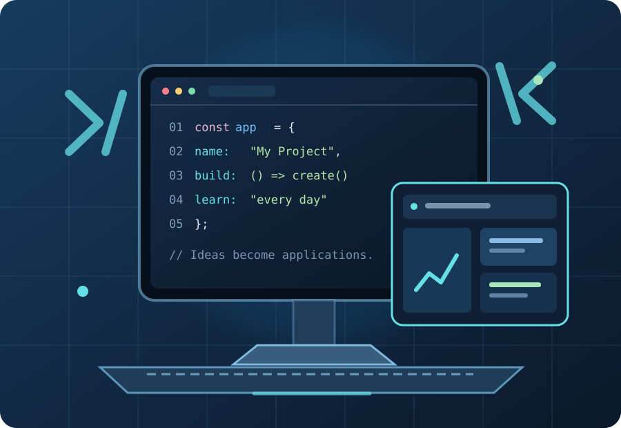
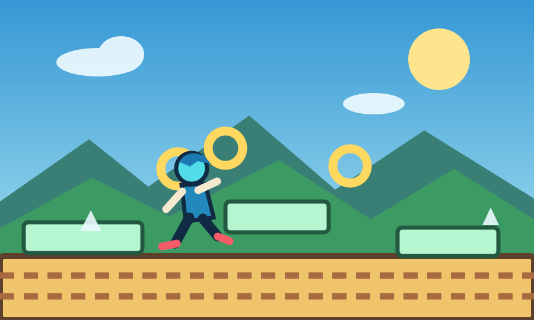

HTML5
Estructura y organización de contenido web.
Jhonn · Estudiante de Ingeniería en Computación | USFQ
Me interesa el desarrollo de software, la programación y la creación de aplicaciones web interactivas. Disfruto analizar problemas, aprender nuevas herramientas y transformar ideas en proyectos funcionales.

Una presentación de mi formación, mi manera de trabajar y los conocimientos que estoy desarrollando.
Actualmente estudio Ingeniería en Computación en la Universidad San Francisco de Quito (USFQ). En mis proyectos académicos he trabajado en páginas web, videojuegos, interactividad y comunicación entre usuarios en línea.
Me considero una persona responsable, organizada y comprometida con las tareas que asumo. Me gusta comprender los problemas, probar alternativas y aprender de los errores para mejorar el resultado. También valoro la comunicación y el trabajo bien hecho.
Tecnologías y plataformas aplicadas en ejercicios y proyectos académicos. Continúo fortaleciendo estos conocimientos.
Estructura y organización de contenido web.
Estilos, distribución visual y diseño adaptable.
Lógica, eventos e interactividad en el navegador.
Realtime y almacenamiento de resultados en tablas.
Despliegue y publicación de aplicaciones web.
Repositorios y publicación de sitios con Pages.
Representación gráfica para videojuegos 2D.
Diseño de pantallas e interacción adaptable.
Los conocimientos descritos corresponden a herramientas utilizadas en mis proyectos académicos; no representan certificaciones profesionales.
Proyectos que muestran mi experiencia práctica inicial con desarrollo web, lógica de programación e interacción entre usuarios.

Videojuego de plataformas en el que el jugador salta y se agacha para esquivar obstáculos y recoger objetos. El proyecto combina diseño visual, controles y lógica de juego.
Construido con HTML, CSS y JavaScript. JavaScript controla el movimiento del personaje, la aparición de obstáculos, las colisiones y el puntaje. Está publicado en GitHub Pages y la lógica se ejecuta en el navegador; no usa una base de datos para guardar resultados.

Videojuego de carreras 2D para dos jugadores que se conectan desde dispositivos distintos. La aplicación comparte el estado de la carrera y permite comparar la distancia recorrida.
Construido con HTML, CSS y JavaScript. Vercel publica la aplicación; Supabase Realtime sincroniza el estado de los jugadores y la tabla race_results almacena el ganador, la distancia, los nombres y la fecha de la carrera.
Una actividad que complementa mi formación y fortalece mi manera de asumir nuevos retos.
Practico ciclismo y he participado en campeonatos nacionales. En la temporada 2026 obtuve el título de campeón nacional, dos medallas de oro y dos de bronce. Esta experiencia ha fortalecido mi disciplina, constancia y responsabilidad, cualidades que también aplico a mis estudios y proyectos.
Mi objetivo es continuar fortaleciendo mis conocimientos en computación, participar en nuevos proyectos y aportar responsabilidad, dedicación y disposición para aprender en cada oportunidad.